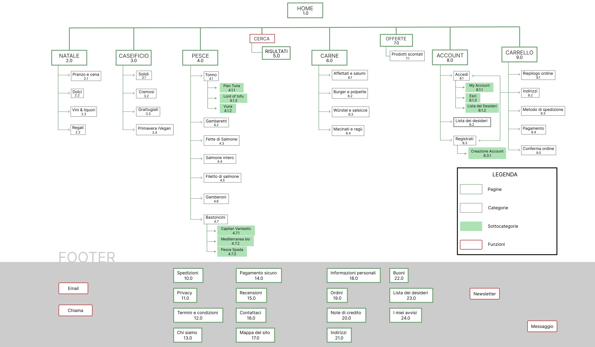
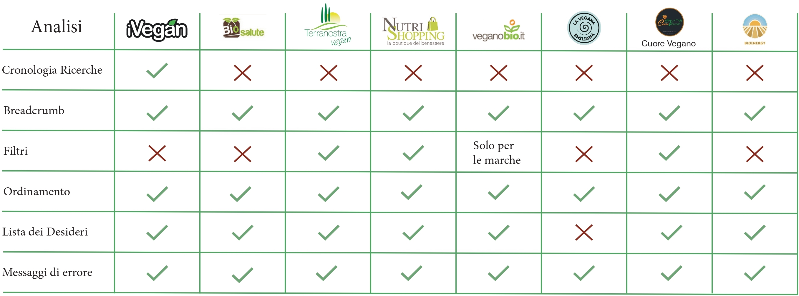
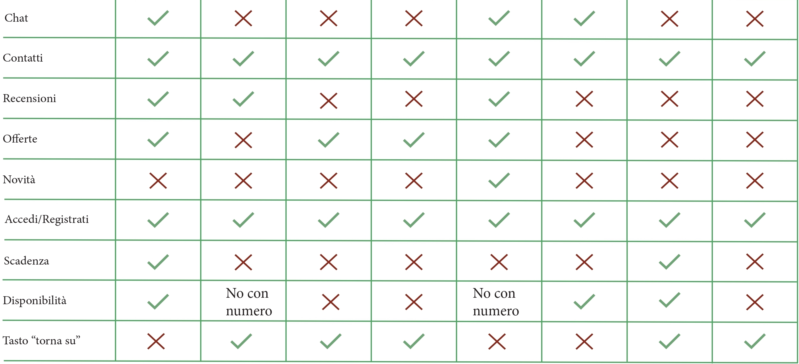
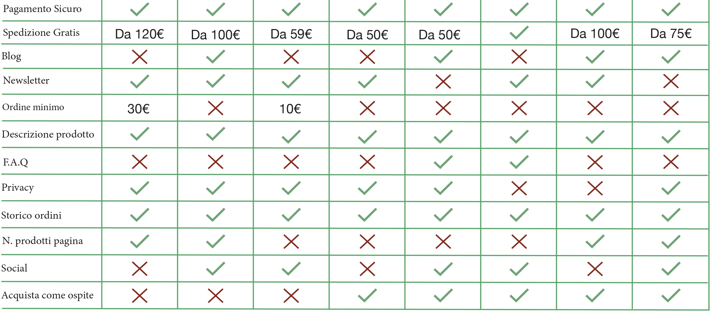

Sitemap Precedente
Sitemap Aggiornata

iVegan nasce nel 2008 grazie alla passione e all’esperienza maturata nei gruppi di acquisto vegan. Da qui l’idea di un progetto ambizioso:
iVegan è il primo e più grande distributore di alimenti vegan nel nostro paese.
Seleziona le imprese tra produttori artigiani e grandi aziende specializzate nel settore, mettendo sempre al
primo posto la qualità.
Una spesa completa, dalla colazione alla cena, che rende più semplice e sfiziosa la scelta vegan: perchè
crediamo che il mondo si modifica a partire da noi stessi, consapevoli che il primo cambiamento da attuare sia
quello alimentare di tipo etico verso gli animali e la terra che ci ospita.
iVegan è il primo e più fornito rivenditore di alimenti per vegani, dal 2008 rivende prodotti delle più ricercate marche Italiane ed europee.
Dopo una ricerca accurata fatta, sono stati identificati 7 possibili competitor che hanno lo stesso obbietivo.
  Cerca di promuovere un’alimentazione vegana a tutti offrendo prodotti di qualsiasi genere a prezzi accessibili a tutti e soprattutto di ottima qualità.
Dalle informazioni ottenute,la fascia d’età interessata va dai 30 ai 50 anni circa, la società ha come obbiettivo principale quello di estendersi anche nelle fasce d’età più giovani.
La comunità è per lo più composta da donne, più interessate ai prodotti vegani e anche disposte solo a provare. Il brand però ha l’obbiettivo di estendere la cerchia a qualsiasi genere.
Per quanto riguarda l’istruzione l’utente risulta ad essere amante della cultura, aperto a nuovi pensieri e di mente aperta. Le condizioni economiche del target risultano essere modeste.